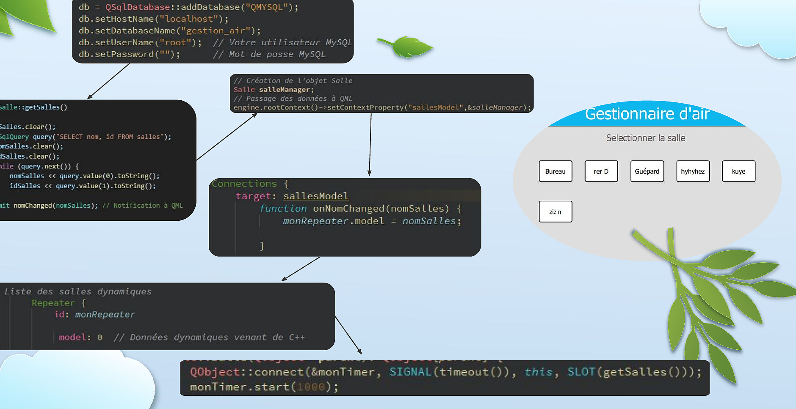
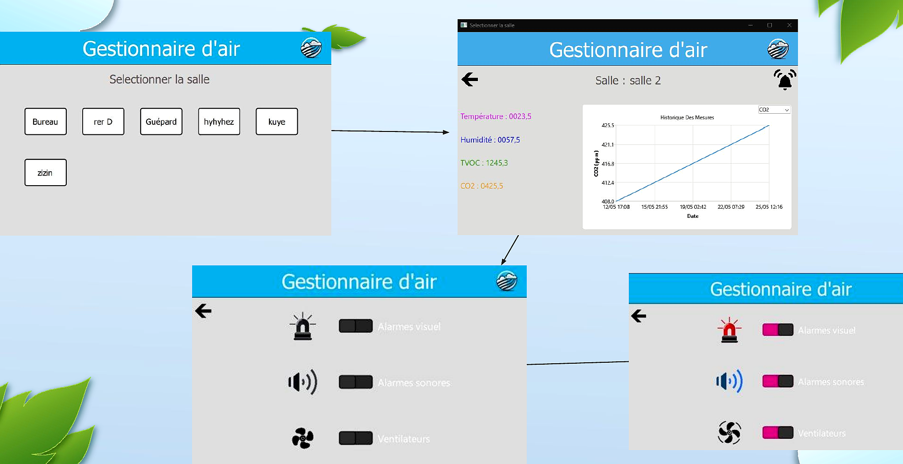
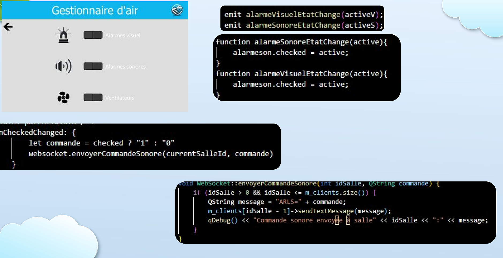
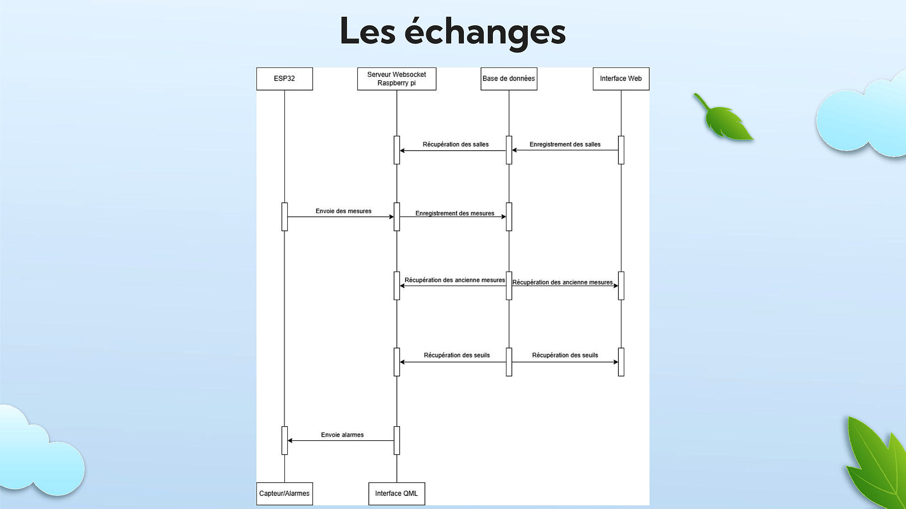

Gestionnaire de qualité d'air
Application IHM de supervision en temps réel de la qualité de l'air intérieur — mesure, stockage, visualisation et gestion des alarmes sur plusieurs salles. Projet de BTS CIEL, réalisé en équipe de 3.
1 · Sélection de salle

2 · Interface de mesures et historique

3 · Gestion des alarmes et ventilateurs

4 · Architecture du système
Raspberry Pi 4

CO2_001=0414,0;TVOC001=0018,0;... via WebSocket. Le serveur stocke en BDD et redistribue à l'IHM.
5 · Fonctionnalités clés
Mesures temps réel
CO₂, TVOC, température, humidité mis à jour en continu via WebSocket
Historique graphique
Visualisation par capteur avec sélecteur déroulant, axes dynamiques Qt Charts
Alarmes intelligentes
Déclenchement auto selon seuils configurés — visuelles et sonores
Contrôle ventilation
Activation/désactivation des ventilateurs via GPIO avec librairie GPIOD
BDD dynamique
Tables créées automatiquement par mois/année — gestion des requêtes SQL via Qt
Multi-salles
Supervision simultanée de N salles avec navigation fluide entre les vues
6 · Extrait de code — réception WebSocket
// Format reçu : CO2_001=0414,0;TVOC001=0018,0;TEMP001=0026,5;HUM001=0033,7 void WebSocket::processTextMessage(QString message) { QWebSocket *senderSocket = qobject_cast<QWebSocket*>(sender()); QString CO2 = message.mid(0, 4); QString num = message.mid(4, 3); QString valeur = message.mid(8, 6); valeur = valeur.replace(',', '.'); QString currentTime = QDateTime::currentDateTime() .toString("yyyy-MM-dd HH:mm:ss"); // Stockage en BDD + émission signal vers QML emit nouvellesMesures(id, valeur3, valeur4, valeur2, valeur); }
void Salle::gestVentilateur(int idSalle, bool actif) { int value = actif ? 1 : 0; if (idSalle == 1) { gpiod_line_set_value(line1, value); qDebug() << "Ventilateur salle 1" << (actif ? "ON" : "OFF"); } else if (idSalle == 2) { gpiod_line_set_value(line2, value); qDebug() << "Ventilateur salle 2" << (actif ? "ON" : "OFF"); } }
7 · Difficultés rencontrées